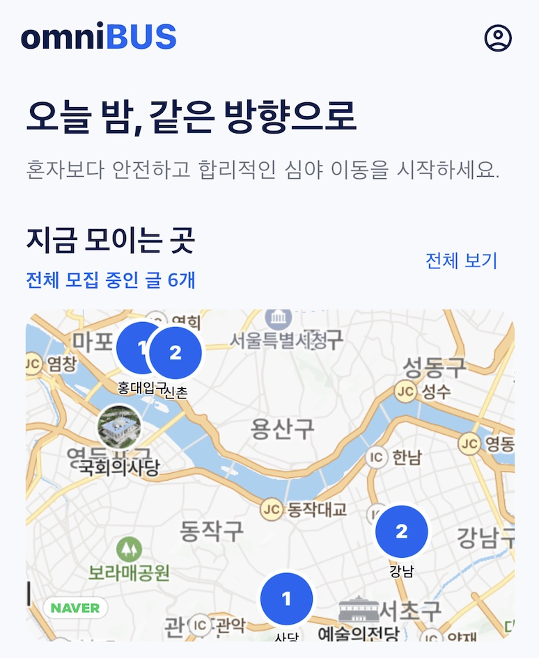
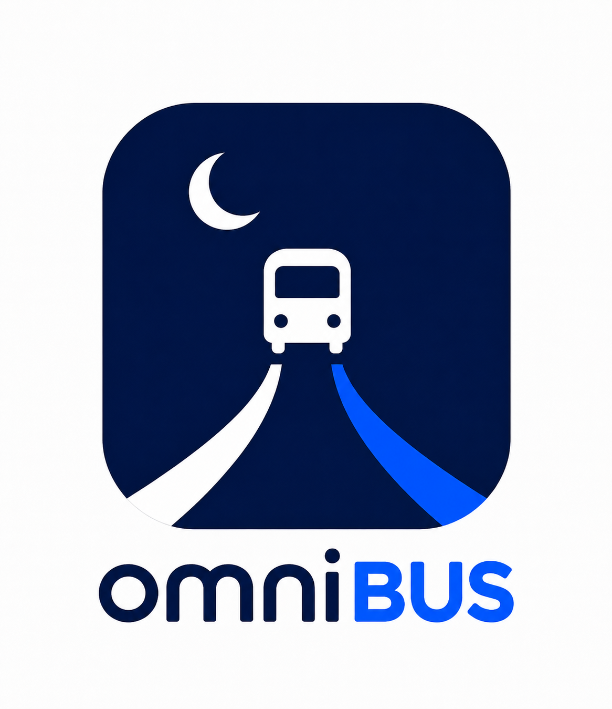
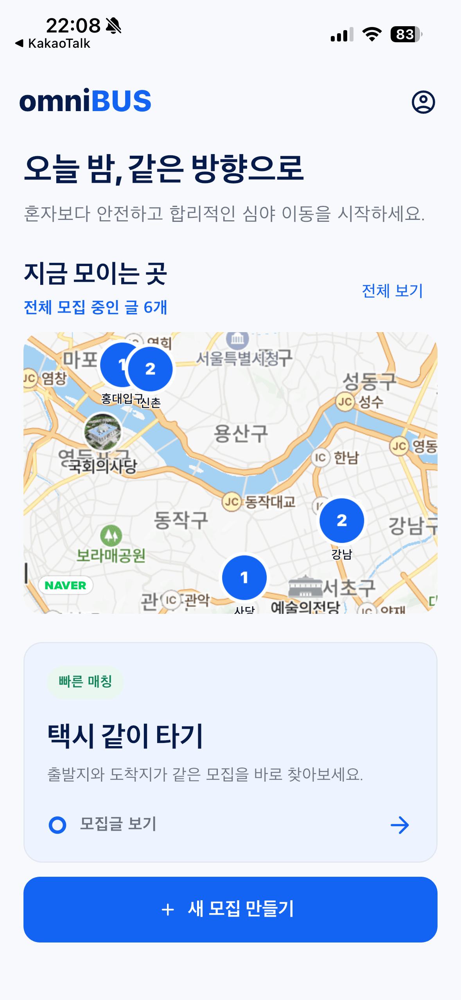
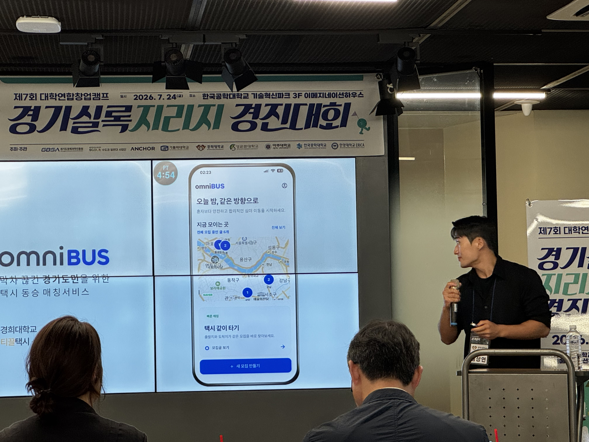
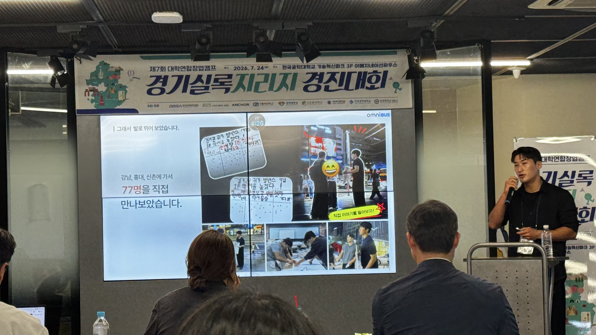
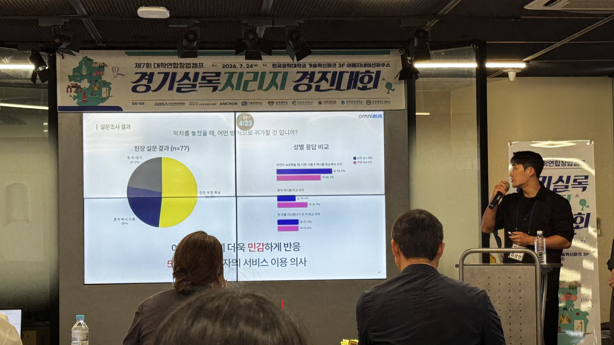
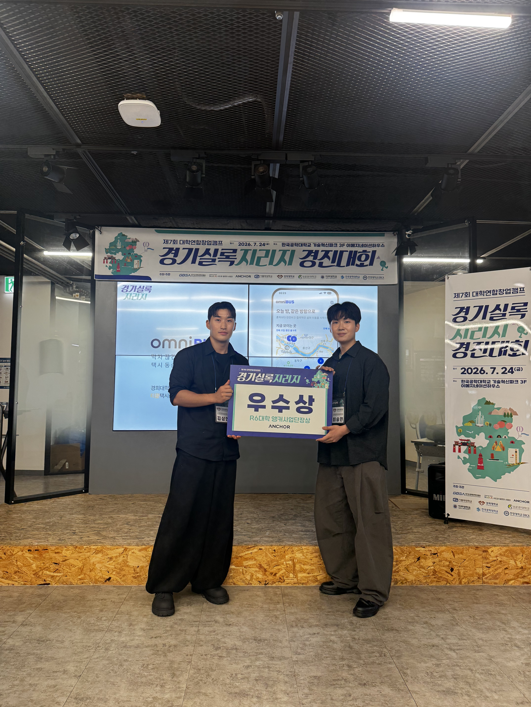

Product · Mobility
omniBUS
막차가 끊긴 뒤에도, 혼자 귀가하지 않도록.

막차가 끊긴 뒤에도,
혼자 귀가하지 않도록.
omniBUS는 비슷한 경로로 이동하는 사람들을 연결해 심야 택시 동행을 만들고, 출발 전 필요한 약속과 안전 정보를 한곳에서 조율할 수 있도록 돕는 모바일 서비스입니다.
프로젝트 배경
심야 시간에는 대중교통이 끊기면서 귀가가 갑자기 개인의 문제가 됩니다. 같은 방향으로 이동하는 사람이 있어도 어디서 만나야 하는지, 몇 시에 출발해야 하는지, 어떻게 동행을 구해야 하는지 조율하기 어렵습니다.
omniBUS는 이 문제를 ‘동행’이라는 방식으로 해결하고자 시작했습니다.
핵심 기능
- 지도에서 역별 동행 수요와 모집글 확인
- 출발역, 도착역, 출발 시간 기반 동행 모집
- 인원, 성별 조건, 집결 장소와 메모 설정
- 동행자의 시간 제안 및 출발 전 참여 확인
- 나의 동행 기록과 완료 후 동행자 평가
- 신고, 차단, 안전 도움 등 기본적인 안전 기능 제공
우리가 한 일
문제 정의와 사용자 리서치를 시작으로 서비스 구조와 핵심 사용자 흐름을 설계했습니다. 이후 Flutter와 Firebase를 활용해 지도 기반 탐색부터 모집, 참여, 시간 조율, 출발 전 확인, 동행 완료까지 이어지는 MVP를 직접 구현했습니다.
또한 수도권 역 데이터를 정리하고, 실제 서비스 흐름을 검증하며 기능을 반복적으로 개선했습니다.
활동과 성과
omniBUS는 경기실록지리지에 참여해 우수상을 수상했습니다.
아이디어를 제안하는 데서 끝나지 않고, 심야 이동이라는 구체적인 문제를 해결하기 위해 실제로 작동하는 서비스로 발전시켰다는 점에서 의미 있는 프로젝트였습니다.
프로젝트를 통해 배운 점
좋은 서비스는 기능을 많이 넣는 것보다, 사용자가 불안해하는 순간을 줄이고 다음 행동을 쉽게 만들어야 한다는 것을 배웠습니다.
omniBUS를 만들며 지도, 사용자 정보, 시간 조율, 안전 안내가 하나의 경험 안에서 자연스럽게 연결되어야 한다는 점을 고민했습니다. 그 결과, 단순한 택시 동승 모집 앱이 아니라 심야 귀가를 함께 준비하고 확인하는 서비스로 발전시킬 수 있었습니다.





